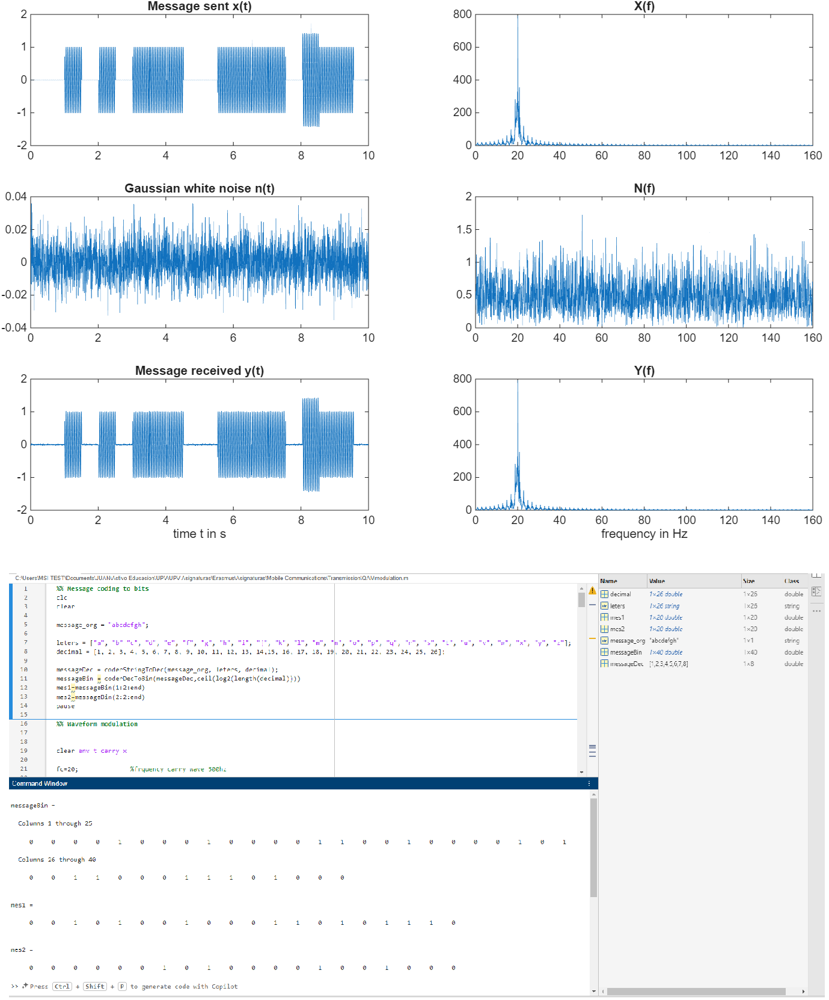
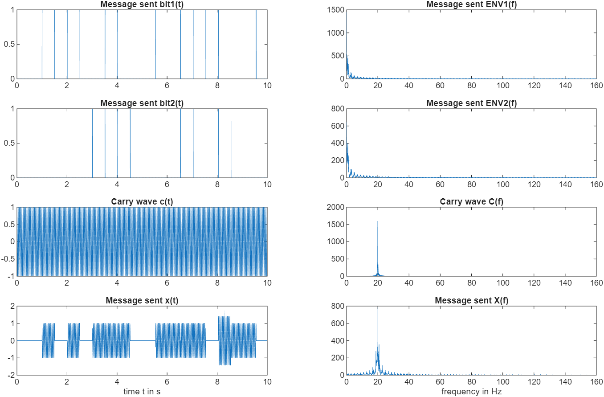
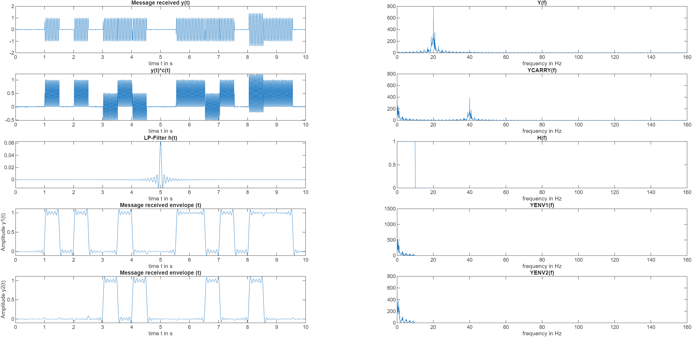
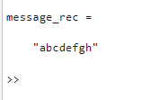

Context
Personal project developed to model and analyze a complete baseband digital communication system under noisy channel conditions, reinforcing concepts from Mobile Communications, Radio Receivers, and Signal Transmission Theory. The project included end-to-end processing from message encoding to reception and decoding.
Engineering Problem
Evaluate the performance of different digital modulation schemes (BPSK, QPSK/PSK,
and QAM) under an Additive White Gaussian Noise (AWGN) channel and analyze their
impact on Bit Error Rate (BER).
The system was designed to implement the full transmission chain:
- Conversion of a human-readable message (ASCII) into binary
- Bitstream grouping and symbol mapping
- Digital modulation
- Transmission through an AWGN channel
- Demodulation and decoding
- BER computation and message reconstruction
My Contribution
- Designed and implemented a complete transmitter–receiver chain
- Developed ASCII-to-bit encoding and bitstream management
- Implemented symbol mapping and demapping for multiple modulation schemes
- Modeled an AWGN channel
- Computed BER vs SNR performance curves
- Compared spectral efficiency vs robustness trade-offs
Tools & Methods
Results
Generated BER vs SNR curves for multiple modulation schemes. Verified expected theoretical trends (higher-order QAM more spectrally efficient but less noise-robust). Successfully reconstructed transmitted messages under different SNR conditions. Identified potential system improvements such as adding error-detection mechanisms (e.g., parity check or CRC).



What I Learned
Strengthened practical intuition on modulation trade-offs, spectral efficiency, and noise sensitivity. Gained hands-on experience in implementing a complete digital communication chain and evaluating system-level performance under stochastic channel conditions.